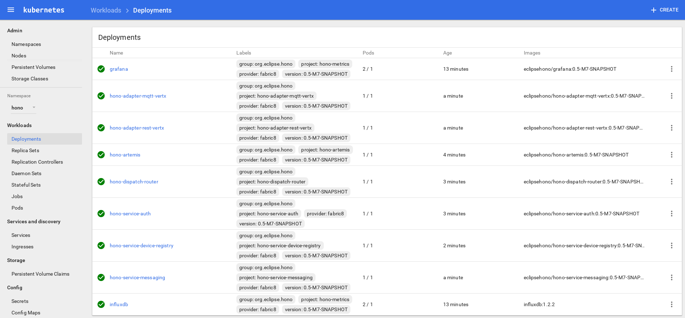

Kubernetes
All the Eclipse Hono™ components can be deployed on Kubernetes, thanks to the resources YAML files that are provided through the repository. These files describe such components in terms of deployments and services in order to have the right pods running in the Kubernetes cluster so that they are able to communicate with each other.
Prerequisites
The main prerequisite for this kind of deployment is to have an available Kubernetes cluster. For a local development, it’s pretty simple having such cluster using Minikube which is a tool that helps you run Kubernetes locally by running a single-node Kubernetes cluster inside a VM. Follow this guide for installing and having Minikube up and running.
The other prerequisite is to have the Kubectl command line tool for interacting with the Kubernetes cluster. Follow this guide for installing and configuring such a tool.
After launching Minikube and before building the Eclipse Hono images, it’s necessary to execute the following command :
$ eval $(minikube docker-env)
In this way, the DOCKER_HOST environment variable is set to the Docker daemon running inside the Minikube VM. Launching the following command for building the Eclipse Hono images,
such daemon will be used and the final images will be available inside the Minikube VM, ready for the deployment.
~/hono$ mvn clean install -Pbuild-docker-image
Script based Deployment
In order to deploy Eclipse Hono on Kubernetes, a bunch of steps are needed as explained in the next chapter. If you want to avoid to do them manually, a one click deployment
script is available in the repository.
After having the Kubernetes cluster up and running and the kubectl command line tool in the PATH, the deployment can be done by running the following bash script
(from the example/target/deploy/kubernetes directory)
~hono/example/target/deploy/kubernetes$ chmod +x *.sh
~hono/example/target/deploy/kubernetes$ ./kubernetes_deploy.sh
In order to see the deployed components, you can launch Kubernetes’ web UI in a browser by issuing:
$ minikube dashboard
Be sure to switch to the hono namespace in the UI in order to see the components deployed as part of Hono.
In the following pictures an Eclipse Hono deployment on Kubernetes is running with all the provided components.

Undeploying Hono
There also is a script for shutting down and undeploying Hono:
~hono/example/target/deploy/kubernetes$ ./kubernetes_undeploy.sh
Deploying individual Components
You may also deploy each of Hono’s components separately by copying the relevant commands from the deploy script to your own script or entering them directly on the command line.
Accessing Hono Services
The Kubernetes deployment provides access to Eclipse Hono by means of services and the main ones are:
- hono-dispatch-router-ext: router network for the business application in order to consume data
- hono-adapter-mqtt-vertx: protocol adapter for publishing telemetry data and events using the MQTT protocol
- hono-adapter-rest-vertx: protocol adapter for publishing telemetry data and events using the HTTP protocol
- hono-service-device-registry: component for registering and managing devices
You can check these services through the kubectl get services --namespace hono command having the following output :
NAME CLUSTER-IP EXTERNAL-IP PORT(S) AGE
grafana 10.0.0.115 <nodes> 3000:31000/TCP 15m
hono-adapter-mqtt-vertx 10.0.0.155 <nodes> 1883:31883/TCP,8883:30883/TCP 2m
hono-adapter-rest-vertx 10.0.0.184 <nodes> 8080:30080/TCP,8443:30443/TCP 3m
hono-artemis 10.0.0.11 <none> 5672/TCP 6m
hono-dispatch-router 10.0.0.175 <none> 5673/TCP 5m
hono-dispatch-router-ext 10.0.0.124 <nodes> 5671:30671/TCP,5672:30672/TCP 5m
hono-service-auth 10.0.0.116 <none> 5671/TCP 5m
hono-service-device-registry 10.0.0.248 <none> 5671:31671/TCP,8080:31080/TCP,8443:31443/TCP 4m
hono-service-messaging 10.0.0.223 <none> 5671/TCP 3m
influxdb 10.0.0.217 <none> 2003/TCP,8083/TCP,8086/TCP 15m
These services are accessible using the Minikube VM’s IP address (which you can get with the minikube ip command) and the so called node ports (i.e. 30080, 30671, …).
In the following sections the $(minikube ip) is used in order to put the IP address of the Minikube VM into the command to execute.
Starting a Consumer
As described in the Getting Started guide, data produced by devices is usually consumed by downstream applications which connect directly to the router network service.
You can start the client from the example folder as follows:
~/hono/example$ mvn spring-boot:run -Drun.arguments=--hono.client.host=$(minikube ip),--hono.client.port=30671,--hono.client.username=consumer@HONO,--hono.client.password=verysecret
Uploading Telemetry
In order to upload telemetry data to Hono, the device needs to be registered with the system. You can register the device using the
Device Registry by running the following command (i.e. for a device with ID 4711):
$ curl -X POST -i -H 'Content-Type: application/json' --data-binary '{"device-id": "4711"}' http://$(minikube ip):31080/registration/DEFAULT_TENANT
After having the device registered, uploading telemetry is just a simple HTTP POST command to the HTTP Adapter:
$ curl -X POST -i -u sensor1@DEFAULT_TENANT:hono-secret -H 'Content-Type: application/json' --data-binary '{"temp": 5}' http://$(minikube ip):30080/telemetry
Other than using the HTTP Adapter, it’s possible to upload telemetry data using the MQTT Adapter as well:
$ mosquitto_pub -h $(minikube ip) -p 31883 -u 'sensor1@DEFAULT_TENANT' -P hono-secret -t telemetry -m '{"temp": 5}'
The username and password used above for device 4711 are part of the example configuration that comes with Hono. See Device Identity for an explanation of how devices are identified in Hono and how device identity is related to authentication.